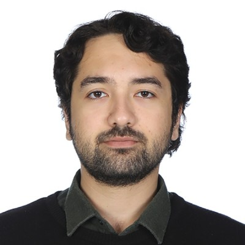
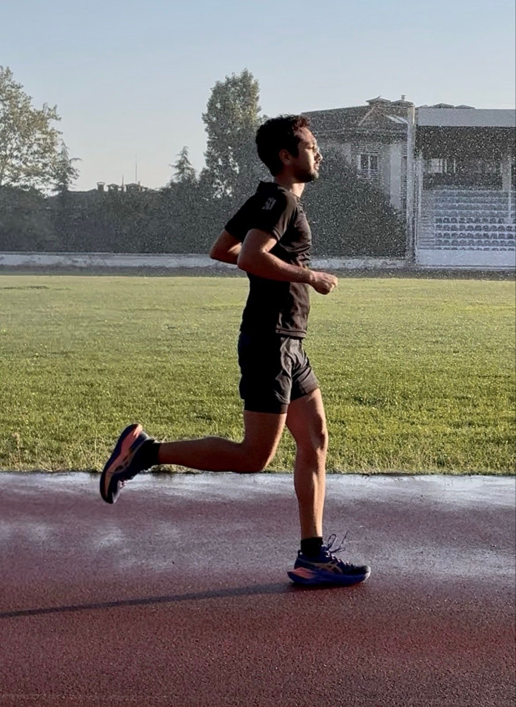
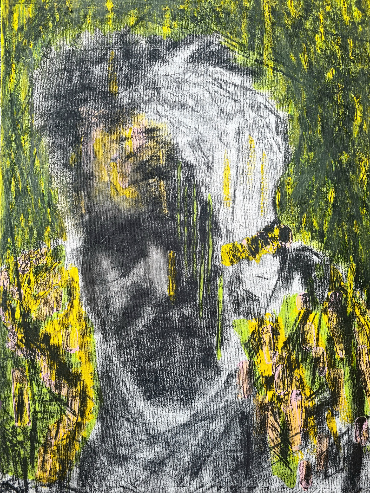
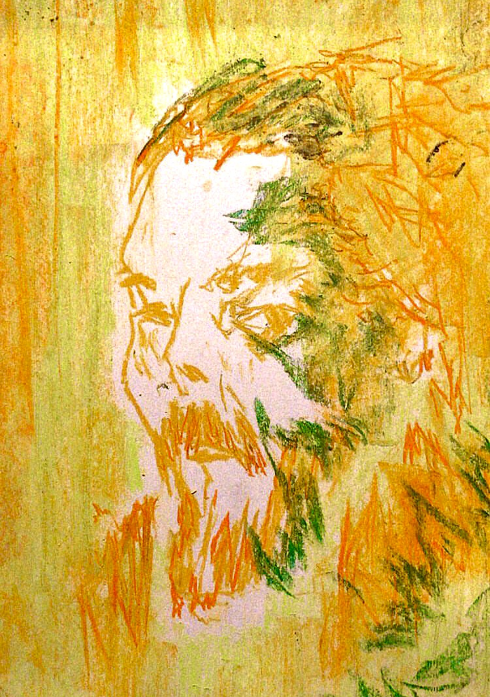
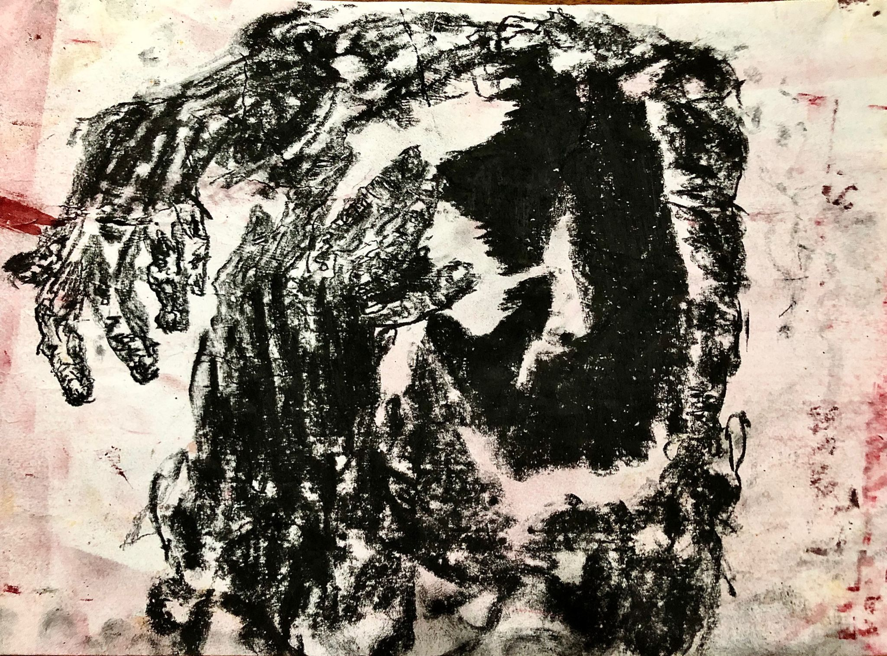
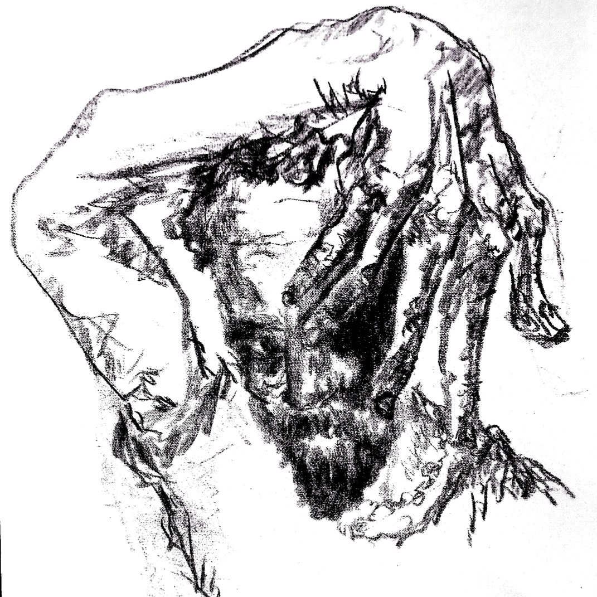

Boğaziçi University
Istanbul, TürkiyeB.Sc. Mathematics
- Expected graduation: 2027 | GPA: 3.30
- Coursework focus: Algebraic Topology, Symplectic Geometry, Differential Geometry

Mathematics Undergraduate at Boğaziçi University
B.Sc. Mathematics
Undergraduate Researcher
Python (NumPy, Matplotlib) · LaTeX · MATLAB (basic)
Turkish (native) · English (fluent) · French (basic)

I am an active runner, covering more than 25 km each week. I have completed 10K and half-marathon distances, including a sub-2-hour half marathon (21.1 km).
A selection of my sketches and colour studies. Click any image to view it in full.



